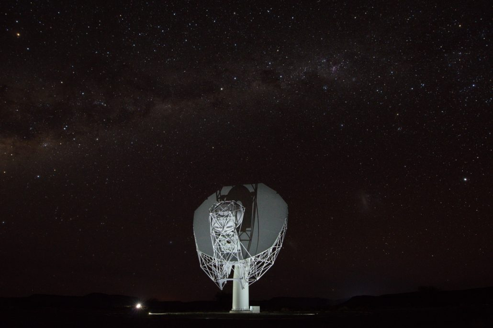

Radio-loud AGNs are the loudest engines in the universe, and the cold atomic gas around them is both their fuel and their first casualty. Measuring that gas without selection bias needs surveys large enough to be representative and pipelines careful enough to be trusted. That is the problem I work on.

MALS is a large MeerKAT programme searching for H I 21-cm and OH absorption towards several hundred bright radio sources. I led its first data release: homogeneous Stokes I continuum image catalogues at 1–1.4 GHz, delivering roughly half a million radio sources with characterised astrometry, flux scale and completeness.
Producing a catalogue of that size means treating the pipeline as a scientific instrument in its own right — quantifying systematics, validating against external surveys, and documenting the reliability of every derived quantity so that other groups can build on it.
21-cm absorption is one of the few probes of cold atomic gas that does not fade with distance: what matters is the brightness of the background source, not the redshift of the gas. That makes it the natural tool for tracing how the cold interstellar medium of radio galaxies evolves across cosmic time.
Using MALS I have searched for associated absorption towards low- and high-excitation radio AGNs, and reported a rare absorber at z ≈ 1.35 whose kinematics point to jet–cloud interaction rather than a quiescent disc — direct evidence of feedback acting on the fuel supply.
A catalogue is only useful if its limits are known. I quantify astrometric and flux-scale accuracy, completeness and reliability against external surveys, so that statistical work built on MALS rests on measured rather than assumed systematics.
Radio position alone rarely settles what a source is. I combine optical and infrared photometry and spectroscopy — emission-line analysis with GELATO, stellar-kinematic fitting with pPXF, photoionisation modelling with CLOUDY — to place radio sources in physical context.